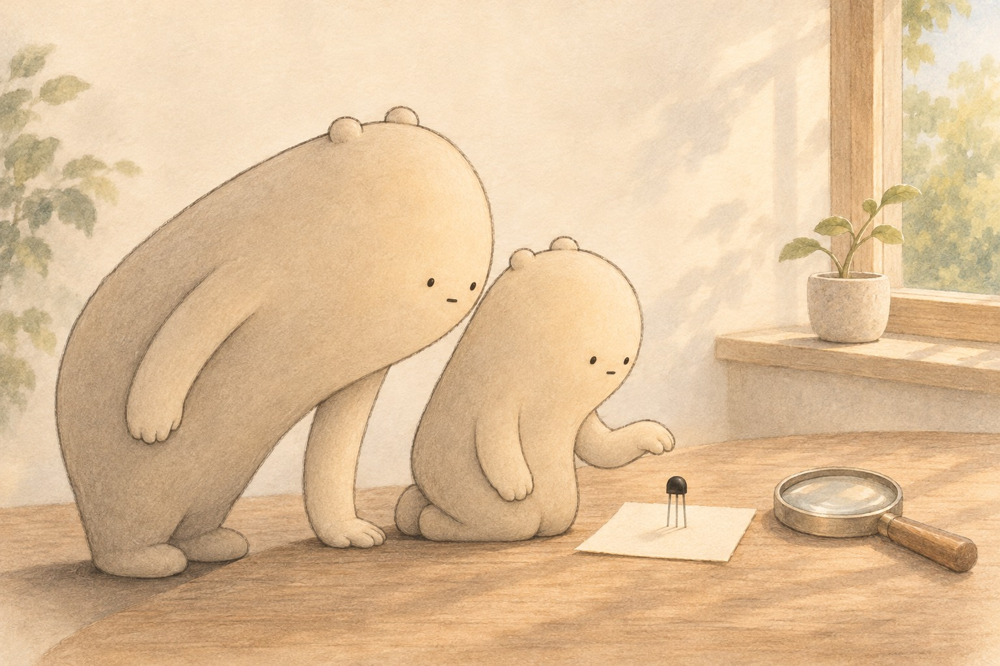

A tiny switch with no moving parts
Transistors

Little Wonderer finds a black bead with three thin legs. It looks like a bug, but it is a transistor. Big Wonderer leans in beside the little one. This one is big enough to see, but most are far too small. Billions of them work inside the machines around us. What could something so small be doing?

Long ago, machines used glass vacuum tubes instead. A tube was about as tall as a hand. It glowed, got hot and burned out like an old light bulb. One early computer needed about 18,000 tubes and filled a whole room. In 1947, three scientists built the first transistor from gold foil and a small crystal.

Think of the tap on a sink. A small turn of the handle lets a big stream of water through. A transistor works a bit like that. Electricity flows in one leg and out another. A tiny signal on the middle leg opens or closes the path. That is how a small push can control a much bigger flow.
- transistor
- a tiny switch that controls a flow of electricity
- vacuum tube
- an old glass part used before transistors
- signal
- a small push that tells something what to do
- silicon
- a material found in sand, used to make transistors
- semiconductor
- a material that carries electricity only some of the time